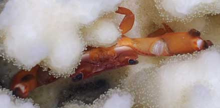
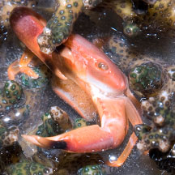
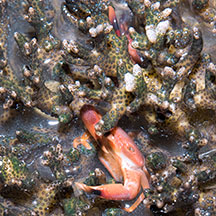
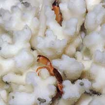
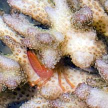

|
|
| crabs text index | photo index |
| Phylum Arthropoda > Subphylum Crustacea > Class Malacostraca > Order Decapoda > Brachyurans > Superfamily Trapezioidea |
| Red
coral crab Trapezia cymodoce Family Trapeziidae updated Dec 2019 Where seen? This tiny red crab is sometimes seen in Cauliflower corals (Pocillopora sp.) on our Southern shores. Features: Body width about 1cm, body flat, claws large with pointed pincers usually dark at the tips. Usually red or dark orange. Often, more than one crab is seen in a single colony. They are hard to spot and photograph. This crab lives only in Cauliflower corals (Pocillopora sp.). The crab feeds on the mucus produced by the coral, gathering these with the minute comb-like structures at the tips of their feet. In turn, it protects the coral from predators such as the Crown-of-Thorns sea star and sea snails that eat corals. It discourages the sea star by using its sharp pincers to nip at the sensitive tube feet of the sea star. Status and threats: The Red coral crab is listed as 'Vulnerable' in our Red List of threatened animals of Singapore. |
|
 Cyrene Reef, Jul 10 |
||
 Sentosa Serapong, May 12  A pair in the Cauliflower coral. |
 Cyrene Reef, Jul 10  A pair in a bleaching Cauliflower coral. |
| Red coral crabs on Singapore shores |
On wildsingapore
flickr
|
| Other sightings on Singapore shores |
 Tanah Merah, May 10 |
|
Links
References
|